GAH 카드/타일 설명
손님카드
본판 58장 · 왈츠 35장 · 총 93장직원카드
본판 48장 · 왈츠 30장 · 총 78장| 카드 | 버전 | 이름 | 내용 |
|---|---|---|---|
| 1 | 본판 | Breakfast Server | 라운드당 1번, 공용 공급처에서 슈트루델 1개 또는 케이크 1개를 가져와 손님 1명 위에 놓을 수 있습니다. |
| 2 | 본판 | Dish Washer | 라운드당 1번, 서빙 아이템 추가 행동을 비용 없이 사용할 수 있습니다. |
| 3 | 본판 | Head Chef | 라운드당 1번, 공용 공급처에서 슈트루델 1개와 케이크 1개를 가져올 수 있습니다. |
| 4 | 본판 | Pastry Chef | 라운드당 1번, 공용 공급처에서 케이크 1개를 가져올 수 있습니다. |
| 5 | 본판 | Candy Boy | 라운드당 1번, 공용 공급처에서 슈트루델 1개를 가져올 수 있습니다. |
| 6 | 본판 | Wine Butler | 라운드당 1번, 공용 공급처에서 와인 1개를 가져올 수 있습니다. |
| 7 | 본판 | Coffee Brewer | 라운드당 1번, 공용 공급처에서 커피 1개를 가져올 수 있습니다. |
| 8 | 본판 | Barista | 라운드당 1번, 공용 공급처에서 와인 1개와 커피 1개를 가져올 수 있습니다. |
| 9 | 본판 | Head Waiter | 라운드당 1번, 공용 공급처에서 와인과 커피를 가져올 수 있습니다. 이때 가져오는 와인의 개수는 커피의 개수 이상이어야 합니다. |
| 10 | 본판 | Concierge | 라운드당 1번, 황제 트랙을 1칸 전진할 수 있습니다. |
| 11 | 본판 | Porter | 라운드당 1번, 2크로네를 얻습니다. |
| 12 | 본판 | Receptionist | 라운드당 1번, 객실 1개를 비용 없이 준비할 수 있습니다. |
| 13 | 본판 | Chambermaid | 라운드당 1번, 객실 1개를 준비할 때 비용이 1크로네 감소합니다. |
| 14 | 본판 | Salesman | 라운드당 1번, 직원 카드 2장을 뽑습니다. |
| 15 | 본판 | Lobby Boy | 라운드당 1번, 직원 카드 1장을 뽑습니다. |
| 16 | 본판 | Hotel Manager | 라운드당 1번, 손에 있는 직원 카드 1장을 비용 없이 고용할 수 있습니다. |
| 17 | 본판 | Assistant Manager | 이 카드가 활성화되어 있으면, 값이 6인 주사위를 가져갈 때마다 추가 비용 1크로네를 내지 않습니다. |
| 18 | 본판 | Head of Service | 라운드당 1번, 행동을 강화(Boost)할 때 필요한 1크로네를 지불하지 않아도 됩니다. |
| 19 | 본판 | Sous Chef | 라운드당 1번, 공용 공급처에서 요리(슈트루델/케이크) 최대 2개를 가져와 손님들에게 올려둘 수 있습니다. |
| 20 | 본판 | Dishwasher | 라운드당 1번, 주방의 요리/음료 최대 3개를 손님들에게 비용 없이 옮길 수 있습니다. |
| 21 | 본판 | Bellboy | 라운드당 1번, 대기 줄에서 손님 1명을 비용 없이 가져올 수 있습니다. |
| 22 | 본판 | Waitress | 라운드당 1번, 대기 줄에서 손님 1명을 가져올 때 비용이 1크로네 감소합니다. |
| 23 | 본판 | Room Service | 라운드당 1번, 공용 공급처에서 필요한 아이템을 가져와 손님 1명의 주문을 완료할 수 있습니다. |
| 24 | 본판 | Musician | 라운드당 1번, VP 3점을 얻습니다. |
| 25 | 본판 | Accountant | 직원 카드를 고용할 때마다 1크로네를 얻습니다. |
| 26 | 본판 | Chef | 요리 가져오기 행동을 할 때마다 슈트루델 1개를 추가로 가져올 수 있습니다. |
| 27 | 본판 | Sommelier | 음료 가져오기 행동을 할 때마다 와인 1개를 추가로 가져올 수 있습니다. |
| 28 | 본판 | Maid | 객실 준비 행동을 할 때마다 객실 1개를 추가로 준비할 수 있습니다. |
| 29 | 본판 | Clerk | 호의/돈 얻기 행동을 할 때마다 추가로 1크로네를 얻습니다. |
| 30 | 본판 | Lobbyist | 황제 트랙에서 전진할 때마다 VP 1점을 얻습니다. |
| 31 | 본판 | Architect | 객실을 준비할 때마다 VP 1점을 얻습니다. |
| 32 | 본판 | Interior Designer | VP가 인쇄된 칸에 객실을 준비할 때마다 추가로 VP 2점을 얻습니다. |
| 33 | 본판 | Confectioner | 손님 주문을 완료할 때마다 케이크 1개를 얻습니다. |
| 34 | 본판 | Bartender | 손님 주문을 완료할 때마다 와인 1개를 얻습니다. |
| 35 | 본판 | Coffee Server | 손님 주문을 완료할 때마다 커피 1개를 얻습니다. |
| 36 | 본판 | Chef de Partie | 손님 주문을 완료할 때마다 슈트루델 1개를 얻습니다. |
| 37 | 본판 | Doorman | 대기 줄에서 손님을 가져올 때마다 VP 1점을 얻습니다. |
| 38 | 본판 | Room Inspector | 객실을 점유할 때마다 1크로네를 얻습니다. |
| 39 | 본판 | Bell Captain | 객실을 점유할 때마다 황제 트랙을 1칸 전진할 수 있습니다. |
| 40 | 본판 | Marketing Director | 객실을 점유할 때마다 VP 1점을 얻습니다. |
| 41 | 본판 | Diplomat | 목표 카드에 마커를 놓을 때마다 황제 트랙을 1칸 전진할 수 있습니다. |
| 42 | 본판 | Politician | 목표 카드에 마커를 놓을 때마다 VP 2점을 얻습니다. |
| 43 | 본판 | Investor | 라운드 종료 시, 10크로네 이상이면 VP 3점을 얻습니다. |
| 44 | 본판 | Banker | 라운드 종료 시, 3크로네 이하이면 2크로네를 얻습니다. |
| 45 | 본판 | Inspector | 최종 점수 계산 시, 목표를 2개 이상 달성했다면 VP 5점을 얻습니다. |
| 46 | 본판 | Female Floor Housekeeper | 최종 점수 계산 시, 최상층의 점유된 객실 1개당 VP 1점을 얻습니다. |
| 47 | 본판 | Butler | 최종 점수 계산 시, 고용한 직원 카드 1장당 VP 2점을 얻습니다. |
| 48 | 본판 | Barkeeper | 최종 점수 계산 시, 응대한 손님 1명당 VP 1점을 얻습니다. |
| 119 | 왈츠 | Dancing Master | 주사위 눈 '3'을 가져갈 때마다(메인 행동 전/후), 정상 비용을 내고 무용수 1개를 무도회장으로 추가로 보낼 수 있음. 추가로 1크로네 획득. (메인 행동과 무용수 보내기 사이에 다른 추가 행동 불가) |
| 120 | 왈츠 | Violinist | 즉시(단 1회) 샴페인 3개 획득. |
| 121 | 왈츠 | Concertmaster | 주사위 눈 '1'을 가져간 뒤 메인 행동을 정상 수행하면, 샴페인 1개 획득 + VP 1점. (추가 샴페인은 '슈트루델/케이크 최소 수량' 규칙에 영향 없음) |
| 122 | 왈츠 | Symphonist | 라운드당 1회, 주방에서 샴페인 1개를 정확히 지불하고 VP 5점. |
| 123 | 왈츠 | Usherette | 라운드당 1회, 2크로네를 정확히 지불하고 샴페인 1개 + VP 3점. |
| 124 | 왈츠 | Conductor | 주사위 눈 '4'를 가져갈 때마다 샴페인 1개 + 1크로네 추가 획득. |
| 125 | 왈츠 | Choirmaster | 주사위 눈 '5'를 가져갈 때마다(메인 행동 전/후), 무용수 1개를 무도회장으로 추가로 보낼 수 있음. 이때 비용은 샴페인 1개 할인. (사이에 다른 추가 행동 불가) |
| 126 | 왈츠 | Leading Dancer | 최종 점수 계산 시, (발코니 포함) 모든 무도회장에 있는 내 무용수 1개당 VP 2점. |
| 127 | 왈츠 | Harpist | 즉시(단 1회), 무용수 최대 2개를 같은/다른 무도회장으로 보냄. 첫 번째는 샴페인 최대 2개 할인, 두 번째는 샴페인 1개 할인. (중간 추가 행동 불가) |
| 128 | 왈츠 | Cellist | 라운드당 1회, 주방에서 요리/음료 1개를 정확히 지불하고 무용수 1개를 무도회장으로 보냄(비용 샴페인 1개 할인). |
| 129 | 왈츠 | Pianist | 라운드당 1회, 이 카드로 샴페인 1개 획득. |
| 130 | 왈츠 | Ballet Master | 무용수를 무도회장으로 보낼 때마다 1크로네 획득 + 직원 카드 1장 뽑기. |
| 131 | 왈츠 | Trumpeter | 주사위 눈 '2'를 가져가 메인 행동을 정상 수행한 뒤, 샴페인 1개 획득 + 직원 카드 1장 뽑기. (추가 샴페인은 최소 수량 규칙에 영향 없음) |
| 132 | 왈츠 | Arranger | 목표 카드에 마커를 놓을 때마다 샴페인 2개 획득. |
| 133 | 왈츠 | Danube Steamship Captain | 라운드당 1회, (이 카드 제외) 직원 카드 1장을 고용한 후, 무용수 1개를 무도회장으로 보낼 수 있음(비용 샴페인 1개 할인). (직원 카드 고용과 무용수 보내기 사이 추가 행동 불가) |
| 166 | 왈츠 | Handmaid | 행동 중 황제 트랙을 3칸 이상 전진했다면 이 카드를 뒤집을 수 있음. 그러면 즉시(1회) 객실 최대 2개를 무료로 준비하고 곧바로 점유 면으로 뒤집어 점유. |
| 167 | 왈츠 | Apprentice | 파란 손님 주문(아이템 3개 이상) 완료 후 뒤집을 수 있음. 그러면 즉시 슈트루델 3 + 케이크 3 획득. |
| 168 | 왈츠 | Dishwasher | 빨간 손님 주문(아이템 3개 이상) 완료 후 뒤집을 수 있음. 그러면 즉시 와인 3 + 커피 3 획득. |
| 169 | 왈츠 | Tapster | 노란 손님 주문(아이템 3개 이상) 완료 후 뒤집을 수 있음. 그러면 즉시 6크로네 획득. |
| 170 | 왈츠 | Coachwoman | 라운드당 1회, 주방에서 커피 1개를 정확히 지불하면 VP 3점 + 대기열 손님 1명 무료로 획득. |
| 171 | 왈츠 | Bookkeeper | 라운드당 1회, 주방에서 케이크 1개를 정확히 지불하면 객실 1개 준비 시 최대 2크로네 할인. |
| 172 | 왈츠 | Chef de Rang | 행동으로 음료(와인/커피) 3개 이상을 얻었으면 뒤집을 수 있음. 그러면 즉시(1회) 황제 트랙 5칸 전진. |
| 173 | 왈츠 | Interpreter | 라운드당 1회, 주방에서 슈트루델 2개를 정확히 지불하면 2크로네 + VP 2점. |
| 174 | 왈츠 | Bartender | 행동 중 요리(슈트루델/케이크) 3개 이상을 얻었으면 뒤집을 수 있음. 그러면 즉시(1회) 대기열 손님 1명 무료로 가져오고, 공용 공급처에서 필요한 아이템을 가져와 주문을 즉시 완성. |
| 175 | 왈츠 | Wagon Master | 라운드당 1회, 주방에서 (샴페인 제외) 요리/음료 합 2개를 정확히 지불하면, 지불한 것과 다른 종류의 (샴페인 제외) 요리/음료 2개 획득 + VP 2점. |
| 176 | 왈츠 | Dog Walker | 라운드당 1회, 주방에서 와인 2개를 정확히 지불하면 VP 2점 + 황제 트랙 2칸 전진. |
| 177 | 왈츠 | Hairdresser | 라운드당 1회, 황제 트랙을 정확히 2칸 후퇴하면 손패 직원 카드 1장을 최대 3크로네 할인하여 고용 가능. |
| 178 | 왈츠 | Janitor | 같은 색/다른 색 무관, 객실 3개 이상으로 이뤄진 한 그룹을 완전 점유하면 뒤집을 수 있음. 그러면 즉시(1회) 손패 직원 카드 최대 2장을 무료로 고용. |
| 179 | 왈츠 | Entertainer | 목표 카드에 마커를 놓은 뒤 뒤집을 수 있음. 그러면 즉시(1회) 공용 공급처에서 필요한 아이템을 가져와 손님 최대 2명의 주문을 즉시 완성. |
| 183* | 왈츠 | Manager's Son | 행동 중 샴페인 1개 이상을 소비할 때마다 1크로네 획득. |
유명인사 타일(왈츠)
총 12장| 이미지 | 내용 |
|---|---|
아가사 크리스티 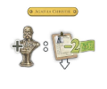(Agatha Christie) | 황제 트랙에서 1칸 이상 전진할 때마다: 손의 직원 카드 1장을 최대 2크로네 할인해 고용할 수 있습니다(전진 출처마다 1장씩). |
알베르트 아인슈타인 (Albert Einstein)  | 라운드당 1번: 주방의 음식/음료(최대 4개)를 공급처의 다른 음식/음료와 같은 개수로 교환합니다(샴페인/돈은 불가). |
찰리 채플린 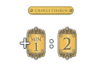(Charlie Chaplin) | VP를 1 이상 획득할 때마다: 추가로 2VP를 얻습니다(VP 획득 출처마다 적용, 자기 자신 연쇄 없음). |
엘리자베스 매기 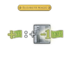(Elizabeth Magie) | 1크로네 이상 획득할 때마다: 객실 1개를 준비할 때 비용 1크로네 할인을 적용할 수 있습니다(출처마다 1회, 연쇄 없음). |
J.R.R. 톨킨 (J.R.R. Tolkien) | (모듈 1+2 동시일 때만) 어떤 이유든 방을 점유할 때마다(색/방법 무관), 추가로 2VP를 얻습니다. |
지아코모 푸치니 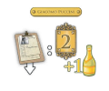(Giacomo Puccini) | 직원 카드를 고용한 뒤마다 샴페인 1개 + 2VP 추가. |
마하트마 간디 (Mahatma Gandhi) | 이 라운드 동안 방 준비(색상 무관) 비용이 0이 됩니다.(무료 행동이 아니라 비용만 제거). |
마리 퀴리 (Marie Curie)  | (모듈 1+2 동시일 때만) 직원 카드 고용 후마다 음식/음료 2개(샴페인 제외)를 추가로 획득(같거나 달라도 됨). |
마타 하리 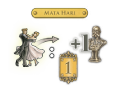(Mata Hari) | (모듈 1+2 동시일 때만) 무용수 1개를 무도회장에 보낼 때마다 1VP + 황제 트랙 +1(무용수마다 적용). |
파블로 피카소 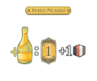(Pablo Picasso) | (모듈 1+2 동시일 때만) 샴페인을 1 이상 획득할 때마다: 원하는 음식/음료 1개(샴페인 제외) + 1VP 추가(출처마다 적용). |
지그문트 프로이트 (Sigmund Freud) | 손님 주문을 완료할 때: 요구 아이템 중 1개를 무시하고 완료할 수 있습니다(요구 아이템이 1개뿐인 손님에는 적용 불가). |
윈스턴 처칠 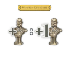(Winston Churchill) | 황제 트랙에서 1칸 이상 전진할 때마다 추가로 +1칸 더 전진합니다(출처마다 적용, 연쇄 없음). |
목표카드
본판 12장 · 왈츠 6장 · 총 18장| 카드 | 이미지 | 내용 |
|---|---|---|
| 105 | 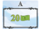 | 20크로네 보유 |
| 106 | 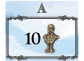 | 황제 트랙 10칸 이상 |
| 107 | 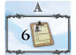 | 직원 카드 6장 이상 고용 |
| 108 | 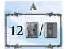 | 호텔 보드에 방 타일 12개 이상(빈/점유 무관) |
| 109 | 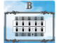 | 호텔의 층 2개 이상이 완전 점유(인접 불필요) |
| 110 | 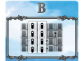 | 호텔의 열 2개 이상이 완전 점유(인접 불필요) |
| 111 | 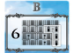 | 완전 점유된 방 그룹 6개 이상(그룹끼리 이어질 필요 없음) |
| 112 | 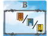 | 어느 한 색의 방을 전부 점유 |
| 113 | 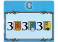 | 점유 방이 빨강 3+ / 파랑 3+ / 노랑 3+ |
| 114 | 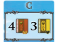 | 점유 방이 빨강 4+ / 노랑 3+ |
| 115 | 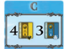 | 점유 방이 노랑 4+ / 파랑 3+ |
| 116 | 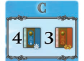 | 점유 방이 파랑 4+ / 빨강 3+ |
| 163 | 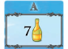 | 주방에 샴페인 7개 이상 |
| 164 | 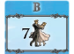 | 무도회장 전체(발코니 포함) 내 무용수 합계 7개 이상 |
| 165 | 초록 손님 4명 이상 주문 완료. | |
| 180 | 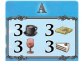 | 주방에 슈트루델 3+ / 케이크 3+ / 와인 3+ / 커피 3+ |
| 181 | 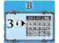 | 호텔 최상층 점유 방 3개 이상 |
| 182 | “각자 주문이 3개 이상”인 손님을 5명 이상 주문 완료 |
왈츠 165/182 추적 규칙(중요): 해당 목표에 해당하는 손님은 즉시 버리지 말고, 개인 뒷면 더미로 보관하다가 목표 달성 후에만 버립니다. (모듈 3 + 카우프만이면 더미 2개로 분리)
참고: 달성했더라도 내 차례에 “추가 행동”으로만 해당 카드에 마커를 올려(클레임) 달성 처리할 수 있습니다. 황제 점수계산 중 조건을 충족하더라도 즉시 클레임할 수 없으며, 다음 내 차례에 클레임해야 합니다.
황제 타일
본판 12장 · 왈츠 6장 · 총 18장| 버전 | 이미지 | 내용 |
|---|---|---|
| 본판 |  | 보상: 3크로네를 받습니다. 벌점: 3크로네를 잃습니다. 3크로네보다 적으면 대신 VP 5점을 잃습니다. |
| 본판 | 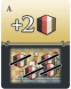 | 보상: 원하는 요리/음료 2개를 받습니다. (평소처럼 손님에게 놓을 수 있습니다.) 벌점: 주방에 있는 모든 요리와 음료를 공급처로 반환합니다. |
| 본판 | 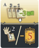 | 보상: 덱에서 직원 카드 3장을 뽑고 그중 1장을 즉시 고용합니다. 이때 비용을 최대 3크로네까지 덜 내고 고용할 수 있습니다. 나머지 2장은 원하는 순서로 덱 맨 아래에 넣습니다.¹ 벌점: 손에서 직원 카드 2장을 덱 맨 아래로 보냅니다. 손에 직원 카드가 2장보다 적으면 대신 VP 5점을 잃습니다. ¹ 뽑은 3장 중 어느 것도(비용 문제 등으로) 고용할 수 없거나 고용하고 싶지 않다면, 3장 전부를 덱 맨 아래로 보냅니다. |
| 본판 | 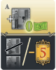 | 보상: 방 1개를 비용 없이 준비합니다(건설). 벌점: 호텔에서 빈 방 1개를 제거합니다. 가능한 한 가장 높은 층에서 제거합니다.² 빈 방이 없으면 대신 VP 5점을 잃습니다. ² 방 제거로 인해 호텔이 여러 분리된 덩어리(클러스터)로 갈라지더라도, 이후에는 어느 덩어리에든 방을 추가할 수 있습니다. 덩어리끼리 연결할 필요는 없습니다. |
| 본판 | 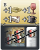 | 보상: 슈트루델 1개, 케이크 1개, 와인 1개, 커피 1개를 받습니다. 벌점: 주방에 있는 것과 카페의 손님 카드 위에 놓인 것을 포함해, 모든 요리와 음료를 공급처로 반환합니다. |
| 본판 | 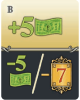 | 보상: 5크로네를 받습니다. 벌점: 5크로네를 잃습니다. 5크로네보다 적으면 대신 VP 7점을 잃습니다. |
| 본판 | 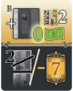 | 보상: 호텔 아래 2개 층에 있는 방 1개를 비용 없이 준비하고 즉시 점유 면으로 뒤집습니다. 아래 2개 층이 이미 방으로 꽉 차 있으면 아무것도 얻지 못합니다. 벌점: 호텔에서 빈 방 2개를 제거합니다. 각각 가능한 한 가장 높은 층에서 제거합니다.² 빈 방이 1개 이하라면 대신 VP 7점을 잃습니다. ² 방 제거로 인해 호텔이 여러 분리된 덩어리(클러스터)로 갈라지더라도, 이후에는 어느 덩어리에든 방을 추가할 수 있습니다. 덩어리끼리 연결할 필요는 없습니다. |
| 본판 | 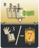 | 보상: 덱에서 직원 카드 3장을 뽑고 그중 1장을 비용 없이 즉시 고용합니다. 나머지 2장은 원하는 순서로 덱 맨 아래에 넣습니다. 벌점: 손에서 직원 카드 3장을 덱 맨 아래로 보냅니다. 손에 직원 카드가 3장보다 적으면 대신 VP 7점을 잃습니다. |
| 본판 | 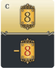 | 보상: VP 8점을 얻습니다. 벌점: VP 8점을 잃습니다. |
| 본판 | 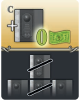 | 보상: 방 1개를 비용 없이 준비하고 즉시 점유 면으로 뒤집어 점유시킵니다.³ ⁴ 벌점: 호텔에서 점유된 방 1개를 가능한 한 가장 높은 층에서 제거하고, 가능하다면 그 다음으로 높은 층에서 점유된 방 1개를 추가로 제거합니다(같은 열 또는 다른 열 가능).? ³ 이 행동으로 같은 색 방의 점유 그룹을 완성했다면, 점유 보너스는 받습니다. ⁴ 이로 인해 내 목표를 완성했더라도, 목표 달성 보상은 즉시 주장할 수 없습니다. 목표 주장은 내 차례에 추가 행동으로 해야 하는데, 지금은 게임이 끝난 상태라 다음 차례가 없기 때문입니다. ? 이전 판과 달리, 제거되는 방들이 같은 열일 필요가 없습니다. |
| 본판 | 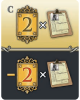 | 보상: 고용한 직원 카드 1장마다 VP 2점을 얻습니다(종류 무관). 벌점: 직원 카드 1장마다 VP 2점을 잃습니다(종류 무관). |
| 본판 | 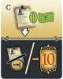 | 보상: 손에서 직원 카드 1장을 비용 없이 고용할 수 있습니다.⁴ 벌점: 진열대에서 해당 기호가 있는 직원 카드 1장을 제거합니다. 그 기호의 직원 카드가 고용 중인 것이 없다면 대신 VP 10점을 잃습니다. ⁴ 이로 인해 내 목표를 완성했더라도, 목표 달성 보상은 즉시 주장할 수 없습니다. 목표 주장은 내 차례에 추가 행동으로 해야 하는데, 지금은 게임이 끝난 상태라 다음 차례가 없기 때문입니다. |
| 왈츠 | 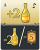 | 보상: 샴페인 2개를 받습니다. 벌점: 주방에서 샴페인 2개를 공급처로 반환합니다. 주방에 샴페인이 2개보다 적으면 대신 VP 5점을 잃습니다. |
| 왈츠 | 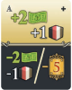 | 보상: 2크로네와, 원하는 요리/음료 1개(샴페인 제외)를 받습니다. 벌점: 2크로네를 지불하고, 주방에서 원하는 요리/음료 1개(샴페인 제외)를 공급처로 반환합니다. 크로네가 2개보다 적거나 주방에 요리/음료가 없으면 대신 VP 5점을 잃습니다. |
| 왈츠 | 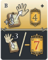 | 보상: 덱에서 직원 카드 3장을 뽑아 손으로 가져옵니다. 추가로 VP 4점을 얻습니다. 벌점: 손에서 직원 카드 3장을 덱 맨 아래로 보냅니다. 손에 직원 카드가 3장보다 적으면 대신 VP 7점을 잃습니다. |
| 왈츠 | 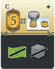 | 보상: 목표 카드들 위에 놓인 내 마커 1개마다 VP 5점을 얻습니다.² 벌점: 돈(크로네)을 전부 잃고, 주방에서 모든 아이템(요리/음료/샴페인)을 제거합니다. ² 모듈 3을 사용하며 니나스 멜란지(Ninas Melange) 플레이어일 때는, 완료한 개인 목표로 인한 이 VP 5점들을 얻지 않습니다. |
| 왈츠 | 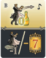 | 보상: 샴페인 비용 없이 무용수를 무도회장으로 보낼 수 있습니다(가능하다면, 평소의 모든 이점 적용). 벌점: 가운데 무도회장에 있는 내 무용수 토큰 1개를 제거해 게임 박스로 되돌립니다.¹ 가운데 무도회장에 무용수가 없으면 대신 VP 7점을 잃습니다. ¹ 여기서 말하는 “가운데/가장 오른쪽 무도회장”은 이번 황제 득점 직후 점수 계산될 무도회장을 뜻합니다. |
| 왈츠 | 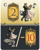 | 보상: 모든 무도회장 전체에 있는 내 무용수 1개마다 VP 2점을 얻습니다.³ 벌점: 가장 오른쪽 무도회장에서 내 무용수 토큰 2개를 제거해 게임 박스로 되돌립니다.¹ 가장 오른쪽 무도회장에 무용수가 1개 이하라면 대신 VP 10점을 잃습니다.³ ¹ 여기서 말하는 “가운데/가장 오른쪽 무도회장”은 이번 황제 득점 직후 점수 계산될 무도회장을 뜻합니다. ³ 발코니의 무용수는 가장 오른쪽 무도회장의 맨 위 줄(top row)에 있는 것으로 계산합니다. |
호텔 입구 타일(왈츠)
총 10장| 이름 | 내용 |
|---|---|
| Chateau Paulwei | 획득 시 : 주방에 케이크 1개, 와인 1개, 커피 1개를 놓습니다. 초기 방 3개를 준비할 때, 추가로 방 2개를 더 준비할 수 있습니다. 그렇게 한다면, 정상 규칙대로 해당 층 시작에 인쇄된 비용을 지불해야 합니다. 따라서 당신은 게임 시작 시 빈 방 5개로 시작합니다. 지속 효과 : 이 호텔입구는 당신의 호텔 보드에 있는 점유 보너스 표(occupancy bonus charts)를 대체합니다. 이후 점유 보너스는 아래와 같이 적용됩니다: • 파란 방 그룹을 1/2/3/4개 완성할 때마다 각각 4/8/13/20VP를 획득합니다. • 빨간 방 그룹을 1/2/3/4개 완성할 때마다 각각 2/4/8/13크로네를 얻습니다. • 노란 방 그룹을 1/2/3/4개 완성할 때마다 각각 황제 트랙 2/4/8/13칸 전진할 수 있습니다. |
| Corogari Zant-Mainz | 획득 시 : 주방에 슈트루델 1개와 와인 1개를 놓습니다. 지속 효과 : 매 라운드마다, 당신이 두 번째 주사위를 가져가는 즉시(해당 주사위 메인 행동 전이라도) 주사위 2개의 합에 따라 보너스를 받습니다. • 합 7: 아무것도 얻지 못합니다. • 합 6 또는 8: 손에서 직원 카드 1장을, 비용을 1크로네 덜 내고 고용할 수 있습니다. • 합 5 또는 9: 슈트루델 1개와 와인 1개를 얻습니다. • 합 4 또는 10: 1크로네를 얻고, 황제 트랙 1칸 전진할 수 있습니다. • 합 3 또는 11: 케이크 1개와 커피 1개를 얻습니다. • 합 2 또는 12: 방 1개(색상 무관)를 비용 없이 준비할 수 있고, 1VP를 획득합니다. 모듈 3과 4를 모두 사용하는 경우: 이 호텔입구 효과에서, 시작 플레이어 행동을 통해 얻는 해골 열쇠(skeleton key)는 당신이 가진 주사위 1개의 값을 복사합니다. 즉, 주사위 1개와 해골 열쇠를 가진 순간, 그 주사위 값의 2배(=두 주사위 합처럼)로 보너스를 결정합니다. |
| Dove | 준비 : 보너스 토큰 5개를 이 호텔입구 옆에 앞면으로 놓습니다. 획득 시 : 주방에 슈트루델 1개와 와인 1개를 놓습니다. 이 호텔입구에 포함된 보너스 토큰 5개를 근처에 둡니다. 초기 방 3개를 준비한 뒤, 네 번째 방 1개를 비용 없이 준비할 수 있습니다. 그 방은 정상 규칙대로 기존 방에 인접해야 합니다. 지속 효과 1(열 완성) : 호텔에서 어떤 열(세로)을, 그 열의 방 4개를 모두 점유하여 완성할 때마다, 즉시 남아있는 보너스 토큰 중 1개를 선택해, 그 토큰의 윗부분에 인쇄된 보너스를 받습니다. 그런 다음 그 보너스 토큰을 게임에서 제거합니다. 지속 효과 2(층 완성) : 호텔에서 어떤 층(가로)을, 그 층의 방 5개를 모두 점유하여 완성할 때마다, 즉시 남아있는 보너스 토큰 중 1개를 선택해, 그 토큰의 아랫부분에 인쇄된 보너스를 받습니다. 그런 다음 그 보너스 토큰을 게임에서 제거합니다. 즉, 게임 전체 동안 받을 수 있는 보너스는 합계 최대 5번입니다. |
| Kaufman | 획득 시 : 주방에 슈트루델 1개, 케이크 1개, 와인 1개, 커피 1개를 놓습니다. 초기 손님 1명을 선택하고 큐를 다시 채운 뒤, 즉시 두 번째 손님 1명을 비용 없이 추가로 선택할 수 있습니다. 그렇게 했다면, 큐를 정상대로 다시 채웁니다. 지속 효과 1: 이 호텔입구는 당신의 카페를 확장해, 손님을 위한 네 번째 테이블(4번째 자리)을 제공합니다. 지속 효과 2: 당신이 선택 행동(즉, 손님 데려오기)을 할 때마다, 손님을 데려오고 큐를 다시 채운 뒤, 큐에서 두 번째 손님 1명을 비용을 지불하고 추가로 데려올 수 있습니다. 그렇게 했다면 큐를 정상대로 다시 채웁니다. 지속 효과 3(라운드 종료 점수): 손님의 주문을 완료할 때, 그 손님 카드를 버림 더미에 놓지 말고, 개인의 뒷면 더미(개인 더미)로 모읍니다. 각 라운드 종료 시, 그 더미에 손님 카드가 2/3/4/5장 이상이면 각각 1/3/6/9VP를 획득합니다. 그 후, 그 손님 카드들을 공용 버림 더미에 놓습니다. |
| Mayenfels | 획득 시 : 주방에 케이크 1개와 커피 1개를 놓습니다. 덱에서 직원 카드 1장을 뽑아 손에 넣습니다. 그다음 손에서 직원 카드 1장을, 비용을 최대 3크로네까지 덜 내고 고용합니다. 지속 효과 : 당신이 직원 카드 1장을 고용할 때마다(고용 직후), 1크로네를 얻고, 덱에서 새 직원 카드 1장을 뽑을 수 있습니다. 단, 이 호텔입구를 획득할 때 고용한 그 직원 카드 1장에는 이 지속 효과가 적용되지 않습니다. |
| Ninas Melange | 준비 : 경매가 시작되기 전에, 남아있는 A/B/C 목표 카드에서 각각 1장씩 무작위로 뽑아 이 호텔입구 옆에 앞면으로 놓습니다. 획득 시 : 주방에 슈트루델 1개, 케이크 1개, 와인 1개, 커피 1개를 놓습니다. 또한 이 호텔입구에 포함된 목표 카드 3장을 근처에 둡니다. 이 3장은 당신의 개인 목표입니다. 지속 효과 : 당신의 턴에, 개인 목표를 달성하면 즉시 VP를 획득합니다: 1–3라운드에 달성 시 15VP, 4–5라운드에 달성 시 10VP, 6–7라운드에 달성 시 5VP. 그 후 달성한 목표 카드를 뒷면으로 뒤집습니다. 이 효과는 게임 보드의 공용 목표를 달성할 때는 적용되지 않습니다. 공용 목표를 달성한 경우에는 정상대로, 게임 보드의 해당 목표 카드에 마커를 놓습니다. 개인 목표 달성은, 목표 카드에 마커를 놓아야 발동하는 직원 효과(카드 #132, #179)를 발동시키지 않으며, 또한 (아이콘으로 표시된) 황제 타일 조건에도 카운트되지 않습니다. 최종 점수계산: 개인 목표 + 게임 보드의 공용 목표를 합쳐, 총 달성 목표가 4개/5개/6개라면 각각 3VP/6VP/10VP를 획득합니다. |
| Stroup | 획득 시: 주방에 슈트루델 1개, 케이크 1개, 와인 1개, 커피 1개를 놓습니다. 지속 효과: 어떤 이유로든 방 그룹에서 “첫 번째 방”을 점유할 때마다, 그 방의 색에 따라 즉시 보너스를 받습니다: 파랑이면 3VP, 빨강이면 2크로네, 노랑이면 황제 트랙 2칸 전진. |
| The Grand Wray Hotel | 준비 : 경매가 시작되기 전에, 남은 A/B/C 황제 타일에서 각각 2개씩 무작위로 뽑아 이 호텔입구 옆에 앞면으로 놓습니다. 획득 시 : 주방에 슈트루델 1개를 놓습니다. 황제 트랙에서 2칸 전진하고, 이 호텔입구와 함께 제공되는 황제 타일 6개를 근처에 둡니다. 지속 효과 : 턴마다 1번, 황제 트랙에서 자신의 마커를 1/2/3칸 후퇴할 수 있습니다. 그렇게 하면 이 호텔입구와 함께 제공된 A/B/C 타일 중 하나를 골라 즉시 보상(즉, 위쪽 부분)을 적용합니다. 이후 선택한 타일을 게임에서 제거합니다. 표기 주의: 타일에 있는 해당 기호는 원래 직원카드에서 “라운드마다 1번”을 뜻하지만, 여기서는 이 효과가 “턴마다 1번”임을 표시하기 위해 사용했습니다(혼동 사과). |
| The Kozi Palace, Vienna | 획득 시: 주방에 케이크 1개와 커피 1개를 놓습니다. 지속 효과: 당신이 어떤 행동 칸을 사용하려고 할 때마다, 그 행동 칸과 인접한 행동 칸에서 주사위 1개를 옮겨 지금 사용하려는 행동 칸 위에 올려놓을 수 있습니다. 그렇게 했다면, 옮긴 주사위를 적절한 숫자로 돌려놓습니다. (참고: 주사위 1과 주사위 6 행동 칸은 서로 인접하지 않습니다.) 예시: 주사위 5 행동 칸과 주사위 6 행동 칸에 각각 주사위가 2개씩 있습니다. 당신은 직원 카드를 고용하고 싶어서, 주사위 6을 주사위 5 행동 칸으로 옮기고, 그 주사위를 주사위 5로 돌려놓습니다. 그 결과, 이제 직원 카드를 3크로네 덜 내고 고용할 수 있습니다. 모듈 3과 4를 모두 사용하는 경우: 해골 열쇠(skeleton key)를 가져갈 때는 주사위를 옮길 수 없습니다. |
| The Ren | 사용 조건: 모듈 1과 모듈 3을 모두 사용할 때만 사용합니다. 획득 시: 주방에 슈트루델 1개, 케이크 1개, 와인 1개, 그리고 추가 샴페인 1개를 놓습니다. 따라서 시작 시 주방에 샴페인 2개로 시작합니다(기본 1 + 이 호텔입구 1). 지속 효과 1: 무용수 1명을 무도회장에 보낼 때마다, 해당 행(가로) 보너스를 2배로 받습니다. 단, 맨 아래 행으로 보냈다면 “0의 2배는 여전히 0”입니다. 지속 효과 2: 무도회장 점수계산이 발생할 때마다, 그 무도회장에 당신 혼자만 최다 무용수를 보유하고 있다면 4VP를 얻습니다. 공동 최다는 효과 없음. |